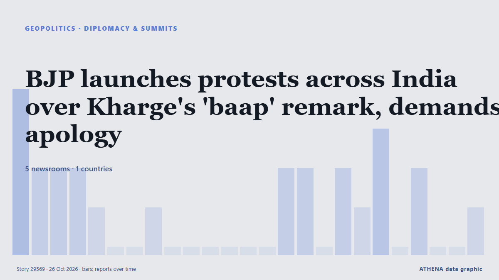

BJP launches protests across India over Kharge's 'baap' remark, demands apology

In response to Mallikarjun Kharge's recent remarks about Prime Minister Narendra Modi, BJP activists took to the streets in various locations including Bihar, Jammu, and Bengaluru. из Times of India
Независимые источники: 5 изданий в 1 стране, с 25 окт.; первым сообщил NDTV; освещение идёт на спад. ATHENA оценивает риск как умеренный (2.4/10), прежде всего из-за тяжести описываемого ущерба и качества доказательств. Уверенность — 59 % (умеренная); подтверждают независимые источники: 5 изданий, средняя надёжность источников — 66 %. СМИ по странам: Индия (24). Освещение: с 25 окт. по 26 окт., 24 ч.
Почему это важно: События в сфере безопасности и дипломатии могут менять союзы, торговлю и рынки далеко за пределами непосредственно затронутых стран.
Что изменилось: 22 новых сообщений от 5 редакций за 24 часа до 26 окт..
Первый заголовок: ‘Mafia’: BJP attacks Congress after Kharge’s ‘baap’ remark targeting PM Modi
Заголовки приводятся на английском языке, как они были опубликованы.
Коротко в цифрах
Отобрано, оценено и написано по опубликованной методологии ATHENA. Ни один редактор не вмешивается в отдельные события. Как это создаётся ›
| 25 Oct 13:04 UTC | 4 |
|---|---|
| 25 Oct 14:04 UTC | 2 |
| 25 Oct 15:04 UTC | 2 |
| 25 Oct 16:04 UTC | 2 |
| 25 Oct 17:04 UTC | 1 |
| 25 Oct 18:04 UTC | 0 |
| 25 Oct 19:04 UTC | 0 |
| 25 Oct 20:04 UTC | 1 |
| 25 Oct 21:04 UTC | 0 |
| 25 Oct 22:04 UTC | 0 |
| 25 Oct 23:04 UTC | 0 |
| 26 Oct 00:04 UTC | 0 |
| 26 Oct 01:04 UTC | 0 |
| 26 Oct 02:04 UTC | 0 |
| 26 Oct 03:04 UTC | 2 |
| 26 Oct 04:04 UTC | 2 |
| 26 Oct 05:04 UTC | 0 |
| 26 Oct 06:04 UTC | 2 |
| 26 Oct 07:04 UTC | 1 |
| 26 Oct 08:04 UTC | 3 |
| 26 Oct 09:04 UTC | 0 |
| 26 Oct 10:04 UTC | 2 |
| 26 Oct 11:04 UTC | 0 |
| 26 Oct 12:04 UTC | 0 |
| 26 Oct 13:04 UTC | 1 |
| 25 Oct 13:17 UTC | 0.0 |
|---|---|
| 25 Oct 17:01 UTC | 1.0 |
| 25 Oct 20:35 UTC | 2.9 |
| 26 Oct 13:46 UTC | 2.4 |
| 26 Oct 13:46 UTC | 2.4 |
Откуда эти цифры
Значимость
Риск
Уверенность
Освещение — кто сообщил и когда
заголовок в оригинале · открывает источник- NDTV · ИндияStorm Over M Kharge's 'Baap' Retort Against PM Modi. Then A 'Misunderstanding' Twist
- Indian Express · Индия‘Modi ka baap bhi jayega’: Mallikarjun Kharge’s remark in Patna sparks BJP backlash
- Hindustan Times · ИндияKharge's 'baap' remark on PM Modi draws BJP backlash, Congress cites heckling in his defence
- The Hindu · ИндияBJP slams Kharge over ‘indecent’ remarks on PM Modi
- Indian Express · Индия‘Crossing limits of indecency’: Amit Shah slams Mallikarjun Kharge over Modi remark
- NDTV · Индия'Baap' Comment Latest In M Kharge's Series Of Jibes At PM Modi
- Hindustan Times · Индия‘Mafia’: BJP attacks Congress after Kharge’s ‘baap’ remark targeting PM Modi
- NDTV · ИндияHalf A Sentence, Then M Kharge's 'Baap' Line: How 'PM Insulted' Row Began With A 'Misunderstanding'
- The Hindu · ИндияBJP to hold nationwide protest on October 26 against Kharge’s remark on Modi
- NDTV · ИндияBJP To Launch Nationwide Protests Against Mallikarjun Kharge Over Remarks On PM Modi
- Times of India · ИндияBJP calls for nationwide protest over Kharge’s ‘baap’ remark
- Hindustan Times · ИндияNitin Nabin takes ‘bankrupt mindset’ jibe at Kharge as row over PM remarks rages; effigy burnt in Patna
- Indian Express · ИндияIndia news Highlights, 26 October 2026: Fresh FIR against actress Urmila Sanawar in Ankita Bhandari murder case row
- Times of India · ИндияBJP files police complaint against Kharge over 'baap' remark targeting PM Modi
- Hindustan Times · ИндияAs Kharge's remark sparks row, 'heckler' clarifies 'Modi won't go anywhere' remark
- Hindustan Times · Индия'Shameful, arrogant': Raghav Chadha slams Kharge's 'baap' remark for PM Modi
- Times of India · Индия'Insult to India itself': Rajnath Singh attacks Kharge over 'baap' remark against PM Modi
- The Hindu · ИндияDefence Minister slams Congress chief for his remarks on Prime Minister
- NDTV · ИндияBJP Holds Protests Across Country, Seeks M Kharge's Apology Over "Baap" Jibe
- The Hindu · ИндияDelhi BJP holds protest near Kharge’s residence; demands apology for ‘insulting’ PM Modi
- The Hindu · ИндияBJP launches nationwide protest against Mallikarjun Kharge over remarks on PM Modi
- Times of India · ИндияBJP launches protests across India over Kharge's 'baap' remark, demands apology
- The Hindu · ИндияKharge’s remark against PM Modi ideological attack, not personal, says Congress general secretary K.C. Venugopal
- Hindustan Times · Индия'Sorry anti-Indian forces, but Modi won't go': BJP hits back day after Kharge's 'baap' remark